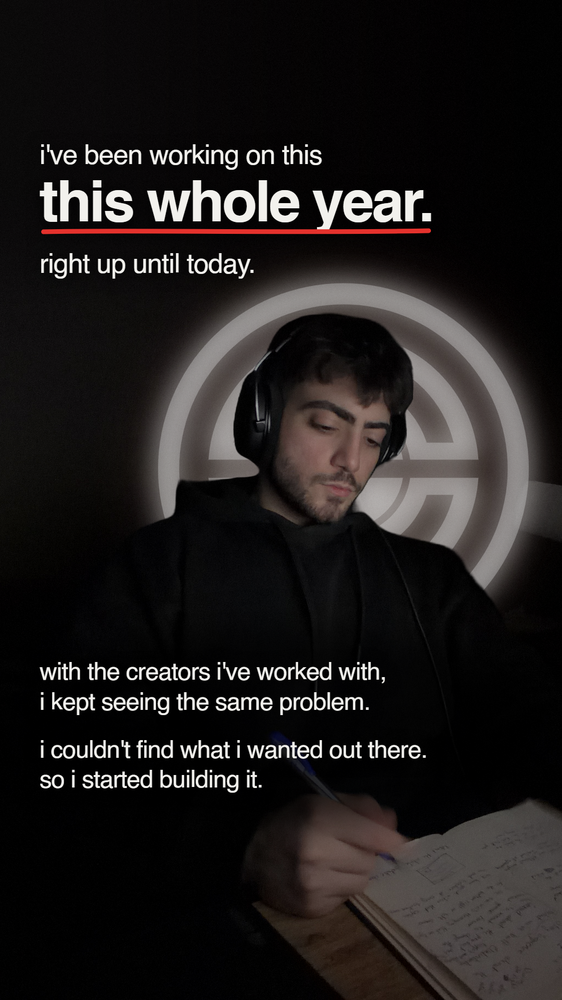

01 / All year

Copy and composition
i've been working on this this whole year, right up until today. with the creators i've worked with, i kept seeing the same problem. i couldn't find what i wanted out there. so i started building it.
Founder-led opening; earlier behind-subject logo retained, new words replace the elapsed-year claim.